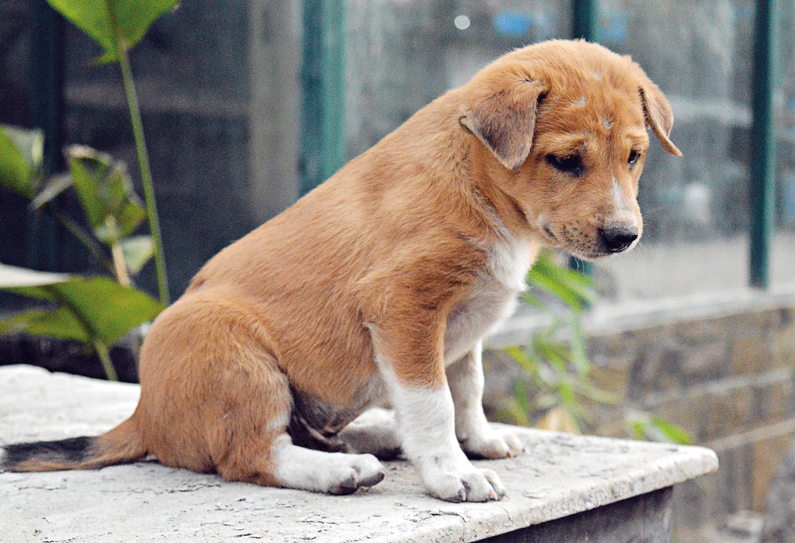
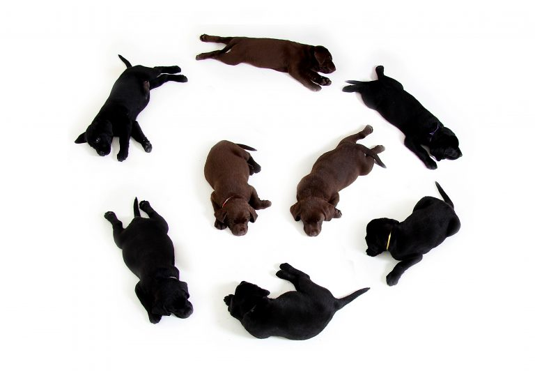
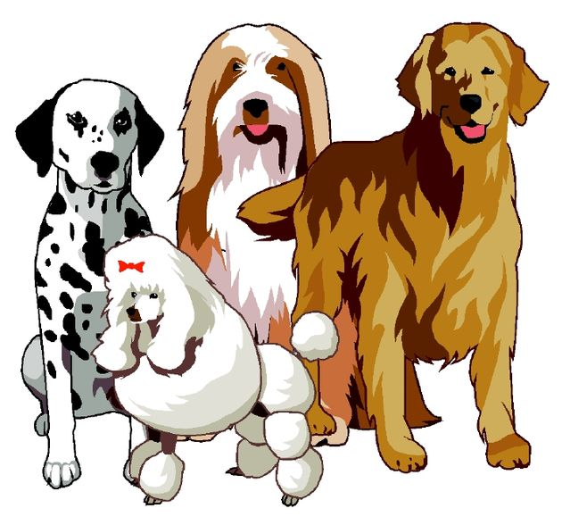

Why Are Dogs Loyal?

It’s an age-old question: Why are dogs loyal? Some might argue that it’s just because we give them food and shelter, but any dog lover knows there’s more to it than that. After all, we give food and shelter to hamsters and goldfish. But those animals usually aren’t quite as devoted as dogs. Pooches cry when we leave the house, jump for joy when we come home and live and breath for our affection. So why is this? Exactly why are dogs so loyal to their humans?
Shared History
Animal experts frequently attribute the loyalty of dogs to a shared history. Canis lupus familiaris and homo sapiens have evolved together. The link between the two species dates many, many years back.
Researchers first theorized that dogs as we know them today evolved from wolves after they began cohabiting with humans. However, more recent studies have found a different conclusion. Experts now believe that dogs split off from their wolf ancestors approximately 135,000 years ago — before dogs or wolves started living with humans.
In fact, archeological evidence, like buried dog bones near human settlements, only really date back 13,000 years. So it stands to reason that the current theory is that wolves evolved into dogs without the help of humans. But once dogs and humans started counting on one another, they became inextricably linked.
Since the early days of becoming man’s best friend, dogs have become emotionally bonded to us. Many dogs pick up on our moods, and can tell when we’re sad or angry. And we understand dogs in return. We can read their expressions and tell when they’re scared, upset or joyful.
Loyalty is also just a natural behavior for dogs. Dogs are pack animals, meaning they are social creatures who prefer the company of other animals. This behavior is a survival mechanism too. Packs succeed because the members of the group depend on one another to survive.
Many dog trainers and other animal experts believe this pack mentality also causes dogs to be loyal to their humans. They think pooches view people as just another member of the pack. So dogs don’t just love a good cuddle — they also think loyalty will keep them alive. In fact, you’ll frequently hear trainers say that during obedience training, you need to assert yourself as the “alpha dog.” If your dog views you as the head of their pack, they’ll follow your lead.
Thanks for reading and be sure to check out our Resource Center for other great articles on dog behavior!
Are dogs really loyal?

The concept of a loyal dog has been peddled so much in today’s media and advertisements that you can be forgiven for questioning its premise: are dogs really loyal?
Let us get the question out of the way: yes, they really are. The stories of dogs who wait endlessly for their owners or who are overjoyed to greet them years later are not made up. You can see the evidence in your own dog, who is delighted when you return home from work and greets you as if they haven’t seen you in weeks. If that is not deep loyalty, we do not know what is.
So, what makes a loyal dog?
The simplest explanation for your dog’s loyalty is that you give them food and shelter. Your dog is grateful to you for the essentials of life that you provide and so is loyal to you.
Researchers first theorized that dogs as we know them today evolved from wolves after they began cohabiting with humans. However, more recent studies have found a different conclusion. Experts now believe that dogs split off from their wolf ancestors approximately 135,000 years ago — before dogs or wolves started living with humans.
There is a scientific basis for this: domestic dogs are descended from wolves, which man once took in and tamed with shelter and food in return for them acting as guard dogs. This reciprocal relationship remains in your dog’s genes and their loyalty is a by-product of it.
Since the early days of becoming man’s best friend, dogs have become emotionally bonded to us. Many dogs pick up on our moods, and can tell when we’re sad or angry. And we understand dogs in return. We can read their expressions and tell when they’re scared, upset or joyful.
Of course, this would mean that loyal dogs adore anyone who feeds them. This is also largely true, as dogs do tend to grow more attached to the family member that gives them their food. But it is not the only explanation.
Dogs are also pack animals and long to belong to a pack. They are much like humans in that way – it is said that no man is an island and the same can be said for a dog. To your loyal dog, your family is their pack and they have adopted you as their own.
Thanks for reading and be sure to check out our Resource Center for other great articles on dog behavior!
Complete diet plan for Labrador Dogs.

Labrador Retriever is inarguably the most popular pet dog breed in India and the most common question we face from pet owners across our chat, emails and phone calls is a suggestion of a diet plan for their lab puppy. So, if you have just bought your new pupper and wondering what to feed him/her, you are at the right place. Although I am not a veterinarian myself, I have been a lab owner for 11 years and been in the pet food industry for the last 6 years. In the course of my journey, I have met countless dog owners, breeders, participated in many dog shows and visited/spoke to many registered veterinary practitioners. So, in this article, I would like to share my experience regarding the most suitable diet for a labrador puppy/dog based on the food and supplement options available in India.
| Labrador age |
Amount to feed daily |
What to feed |
| 0-45 days |
Feed Small quanties via
feeding bottle roughly 100ml
thrice a day.
|
Mother,s milk(best),
milk replacer like royal
canin babydog milk.
|
| 2-5 months |
feed twice roughly
150-200g in each meal.
Total 350-400g per day.
|
starter dry food till 3
months ages and then junior/puppy
food of any brand or home-made food
like cured rice, boneless chicken rice.
|
| 6-15 months |
feed twice roughly
400g+ in whole day.
divided in 2 meals.
|
junior dry food till 15
month age and then adult dry food.
home-made food like chicken rice,
meat-veggie.
|
| adults |
feed twice roughly
400g+ in whole day.
divided in 2 meals.
|
junior dry food till 15
month age and then adult dry food.
home-made food like chicken rice,
meat-veggie.
|
How Many Breeds of Dogs Are There in the World?

This is a difficult question to answer because many varieties of dogs, which might be classifiable as separate breeds, are not recognized by the various international kennel clubs and breed registration groups. However, we can at least give a general count, knowing that it will most certainly be an underestimation.
The World Canine Organization is best known by its French title Fédération Cynologique Internationale (FCI). It is the largest registry of dog breeds that is internationally accepted. At the time of this writing, the FCI recognizes 339 breeds of dogs which are divided into 10 groups based on the dog’s purpose or function or on its appearance or size. The 8 groups are:
- Sheepdogs
- Pinscher
- Terriers
- Dachshunds
- Spitz
- Scenthounds
- Scenthounds
- Related Breeds
- Pointers
- Retrievers
Thanks for reading and be sure to check out our Resource Center for other great articles on dog behavior!
Contract Here
Name:ASHAR ISLAM
Mirpur-1, Dhaka, Bangladesh
01300000000
ashar@yahoo.com